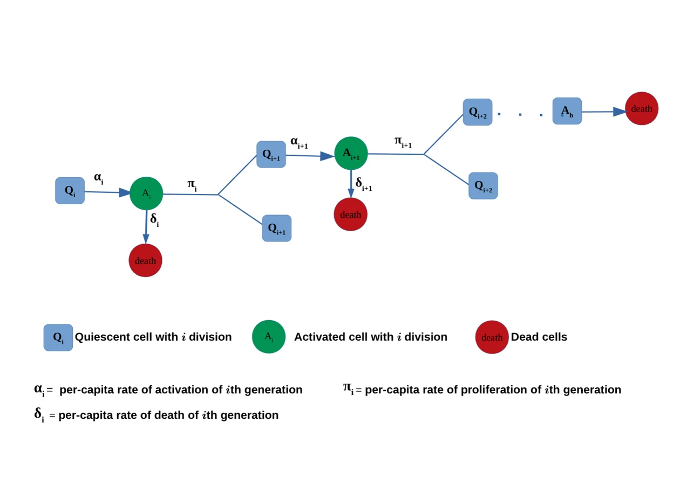
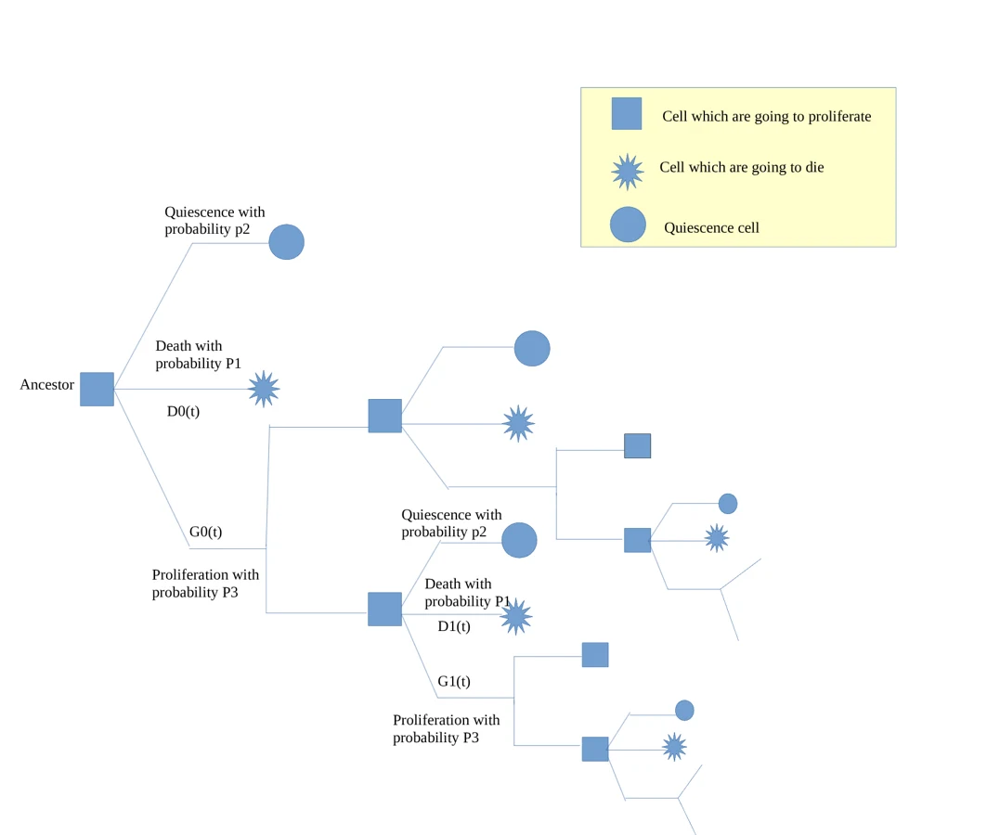

MSc research · quantitative immunology
Mathematical models of T cell proliferation
Mathematical models of T cell proliferation, with potential applications to data
A quantitative immunology project comparing generation-structured models that infer hidden activation, proliferation and death processes from CFSE-style division readouts.

- Cell-fate mechanisms
- Simulation and inference
- Model comparison
Project ownership
| Lead contributor / project owner | Chilperic Armel Foko Kuate. |
| Supervision | Prof. Wilfred Ndifon, Prof. Gisèle Mophou and Dr. Maseim Bassis Kenmoe. |
| Main contributions by Chilperic | Built a reverse-engineering framework for T-cell proliferation dynamics; connected CFSE dilution experiments to generation-resolved mathematical models; reviewed and compared Smith–Martin, Cyton, birth-death and branching-process models; derived a closed-form Cyton case; generated CFSE-style synthetic data using individual-based simulation; extended the work toward stochastic master-equation and generation-dependent activation models. |
Open reduced simulation
The browser model is a compact teaching surrogate for generation-structured proliferation. The project page below explains the full modeling logic.
Research question / Scientific problem
CFSE experiments reveal how many divisions occurred, but not directly the hidden rates governing activation, division and death.
The project therefore starts with the experimental measurement problem: fluorescence dilution produces generation structure, but parameter inference requires a model. The core intellectual task is to map an observed generation histogram to mechanistic assumptions about cell-cycle phases, death, and stochastic fate decisions.
What I built
I built and compared model families for CFSE-based T-cell proliferation: Smith–Martin, Cyton, individual-based simulation and stochastic/master-equation extensions.
Model-family map with source-derived figures
Scientific figure. The following panels are source-derived from the thesis/project documents, not decorative redrawings. They are used to preserve the actual model logic.

The page should be read from the experimental observable to the model classes. CFSE gives generation structure; Smith–Martin and Cyton encode different assumptions about cell-cycle timing and fate; the stochastic extension treats proliferation, death and quiescence as probabilistic lineage events.
- CFSE observation: fluorescence halves after each division, giving generation-resolved counts.
- Smith–Martin: phase-structured deterministic/probabilistic assumptions, including A phase and B phase logic.
- Cyton: probabilistic division and death times.
- Stochastic extension: branching-process and master-equation logic for lineage heterogeneity.

Modeling pipeline / Methods and computational workflow
| Experimental abstraction | CFSE dilution is interpreted as generation-resolved information about proliferation history. |
| Deterministic models | Smith–Martin and birth-death reductions encode cell-cycle phase assumptions using DDE/ODE structures. |
| Probabilistic models | Cyton uses distributions of division and death times to represent cell fate more realistically. |
| Simulation | Individual-based simulation produces synthetic CFSE-like datasets for controlled model comparison. |
| Inference and critique | Model fits are compared using error metrics, with attention to where each model loses biological information. |
Results narrative
The AIMS work showed that the Cyton model generally recovered proliferation parameters better than the Smith–Martin formulation in the tested simulation setting, while also revealing that more realistic age-dependent multitype branching-process models may be theoretically stronger but harder to fit and communicate. The later Yaoundé work extended the same direction by formulating stochastic master-equation logic and deriving statistical quantities such as means and variances of cell counts.
Research contributions
| Quantitative immunology | Immune-cell proliferation was translated into model families tied to experimental observables. |
| Stochastic modeling | The work moves from ODE/DDE descriptions toward branching processes and master equations. |
| Model criticism | Models are compared not by aesthetics but by assumptions and parameter-recovery performance. |
| Scientific continuity | This is the early version of the same pattern later used in metabolism and plant modeling: experiment → model → simulation → inference → critique. |
Limitations
- The AIMS comparison used simulated CFSE-style datasets, so its purpose is controlled model criticism rather than clinical prediction.
- Simplified Smith–Martin and Cyton assumptions can obscure heterogeneity in death, activation and generation-dependent behavior.
- Branching-process and master-equation models are more expressive but require careful inference design and stronger data support.